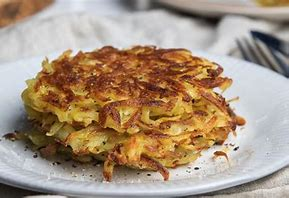

Potato Rosti

Ingredients
- Any amount of potatoes
- Salt
- Black pepper
- Butter
- Oil
- Optional: Cheese, herbs, or spices for flavor
Instructions
- Peel and grate the potatoes.If you dont have a grater thinly slice the potato slices vertically and horizontally
- The soak potato slices in cold water.
- grab a towel and put the potato slices on it then squeeze out any moisture in the potato.
- Lightly season the potato with salt and black pepper.
- In a stainless steel pan add in butter and some oil. Once hot enough add the potato until you gain the desired size and thickness.
- Once the botton side of the potato crisp isup to golden brown it is time to flip it. When both sides are golden brown the rosti is ready to be served. this can be done however you like.
- Serve hot and enjoy your meal!